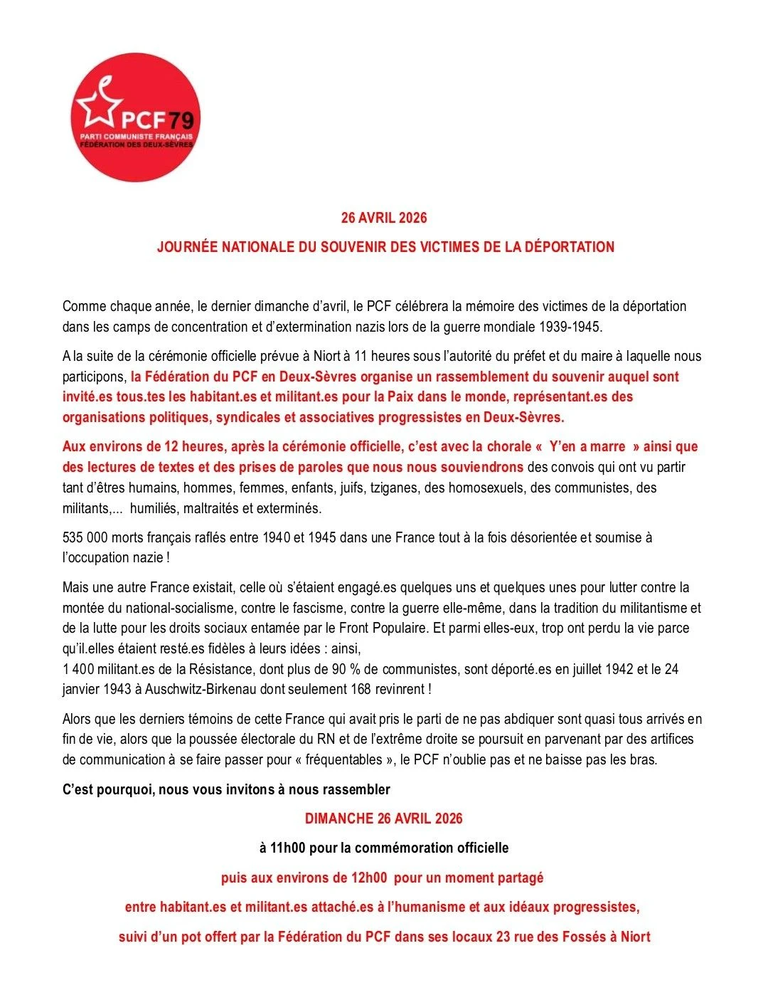

Annonce fédérale
Déportation, entretenir la mémoire à Niort
Date indiquée par Facebook · 23 avril 2026
Repères éditoriaux
Le dimanche 26 avril 2026, nous avions appelé à honorer à Niort la mémoire des victimes de la déportation. Après la cérémonie officielle de 11 h, notre fédération invitait à un rassemblement du souvenir autour de midi, avec la chorale « Y’en a marre », des lectures et des prises de parole.
Texte conservé avec la publication
Déportation : entretenir la mémoire.
Dimanche 26 avril 2026, journée nationale du souvenir des victimes de la déportation.

Sources
Archive rouge · export Facebook · AR-0002-FB-00804
À lire aussi · À Niort, nous avons honoré la mémoire des victimes de la déportation